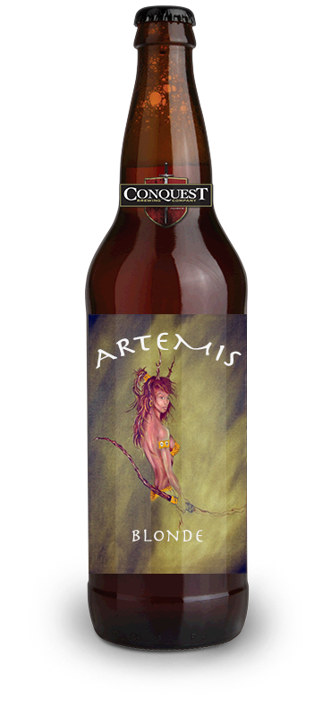
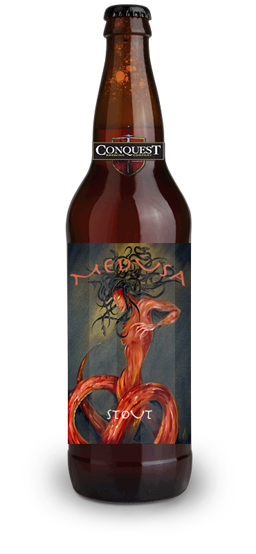

<div class="beer_content">
			<div class="beer_wrapper">
				
				
				<div class="artemis_block block">
					<div class="beer_block_wrapper">
						<div class="artemis_bottle">
							
						</div><!--END BOTTLE IMG-->

						<div class="artemis_flipcard">
							<h1>Artemis Blonde</h1>
							<p>
								With a crystal clear blonde body and fluffy white head, her effervescence emanates as she quenches your thirst and caresses your tongue with mild notes of Belma and Zythos and a delicate malt profile. Her warrior spirit can be experienced in the mild bitterness that is perfectly balanced with the refreshing, honey-like sweetness. Experience her for yourself. You will know the purity of the noble-born.
							</p>

						</div><!--END FLIPCARD-->
					</div> <!--END beer_block_wrapper-->	
				</div> <!--BEER BLOCK-->
				
				<div class="finisher_block block">
					<div class="finisher_bottle bottle">
						
					</div><!--END BOTTLE IMG-->

					<div class="finisher_flipcard">
						<h1>Finisher Lager</h1>
						<p>
							With a crystal clear blonde body and fluffy white head, her effervescence emanates as she quenches your thirst and caresses your tongue with mild notes of Belma and Zythos and a delicate malt profile. Her warrior spirit can be experienced in the mild bitterness that is perfectly balanced with the refreshing, honey-like sweetness. Experience her for yourself. You will know the purity of the noble-born.
						</p>

					</div><!--END FLIPCARD-->	
				</div> <!--BEER BLOCK-->

				<div class="sacred_block block">
					<div class="beer_block_wrapper">
						<div class="sacred_bottle">
							
						</div><!--END BOTTLE IMG-->

						<div class="sacred_flipcard">
							<h1>Sacred Lager</h1>
							<p>
								With a crystal clear blonde body and fluffy white head, her effervescence emanates as she quenches your thirst and caresses your tongue with mild notes of Belma and Zythos and a delicate malt profile. Her warrior spirit can be experienced in the mild bitterness that is perfectly balanced with the refreshing, honey-like sweetness. Experience her for yourself. You will know the purity of the noble-born.
							</p>

						</div><!--END FLIPCARD-->
					</div> <!--END beer_block_wrapper-->	
				</div> <!--BEER BLOCK-->

				<div class="medusa_block block">
					<div class="beer_block_wrapper">
						<div class="medusa_bottle">
							
						</div><!--END BOTTLE IMG-->

						<div class="medusa_flipcard">
							<h1>Medusa Lager</h1>
							<p>
								With a crystal clear blonde body and fluffy white head, her effervescence emanates as she quenches your thirst and caresses your tongue with mild notes of Belma and Zythos and a delicate malt profile. Her warrior spirit can be experienced in the mild bitterness that is perfectly balanced with the refreshing, honey-like sweetness. Experience her for yourself. You will know the purity of the noble-born.
							</p>

						</div><!--END FLIPCARD-->
					</div> <!--END beer_block_wrapper-->	
				</div> <!--BEER BLOCK-->
				
			</div> <!--END wrapper-->
			
		</div><!-- END beer_content-->